[ ENG 6806 // FALL 2026 // WEEK OF OCTOBER 19, 2026 ]
(look, no hurricanes! *knocks wood*)
Conversation as interface
prompting as writing
outputs as code
generative text
distant reading
computational imagination
post-human photography
translation of image to text
moving pictures
images as data
talking to computers
algorithmic influence
software interfaces
creative coding
AI as computational interface
understanding agents
applications across disciplines
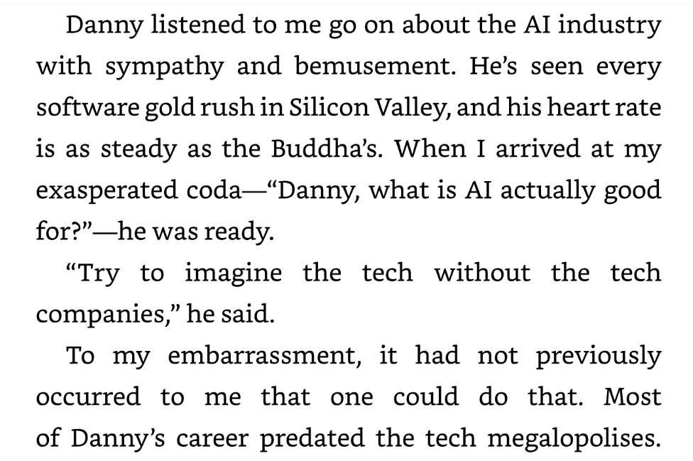
Tyrangiel, AI for Good: How Real People Are Using Artificial Intelligence to Fix Things That Matter (Simon & Schuster, 2026)
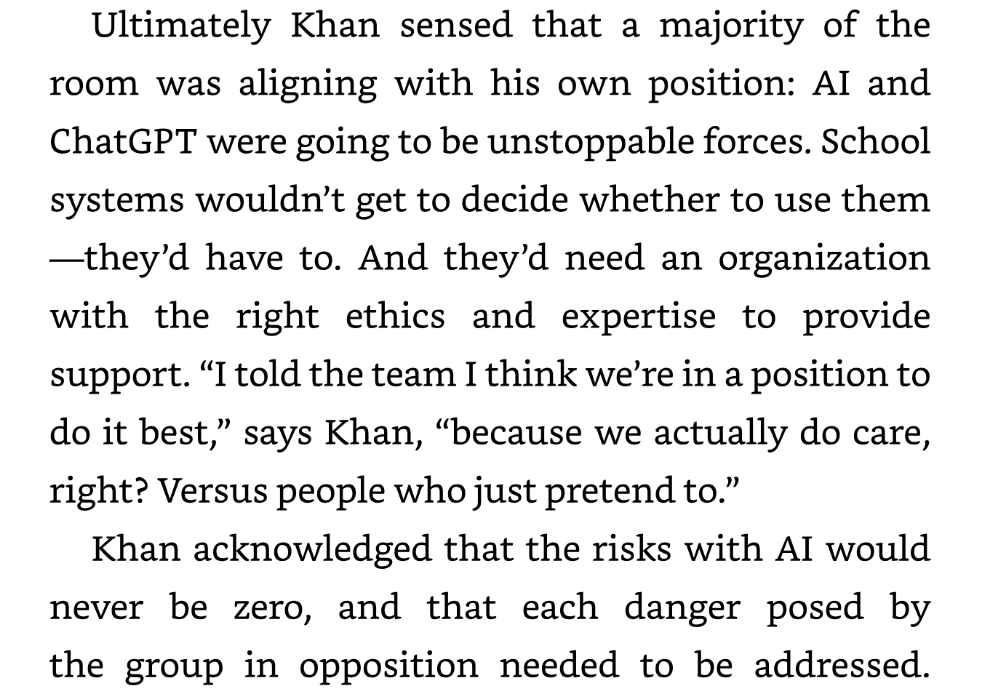
Tyrangiel, AI for Good: How Real People Are Using Artificial Intelligence to Fix Things That Matter (Simon & Schuster, 2026)
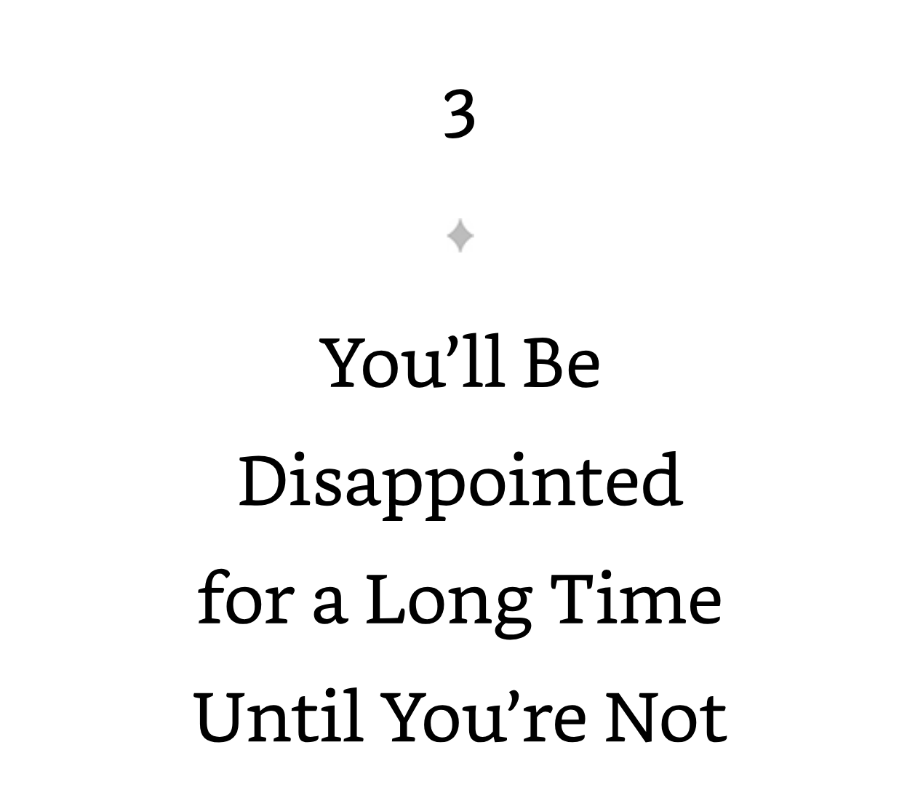
Tyrangiel, AI for Good: How Real People Are Using Artificial Intelligence to Fix Things That Matter (Simon & Schuster, 2026)
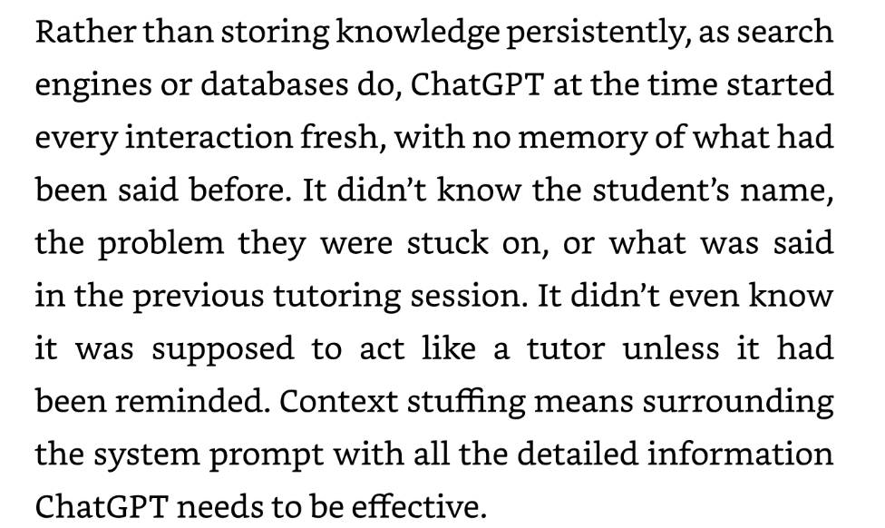
Tyrangiel, AI for Good: How Real People Are Using Artificial Intelligence to Fix Things That Matter (Simon & Schuster, 2026)
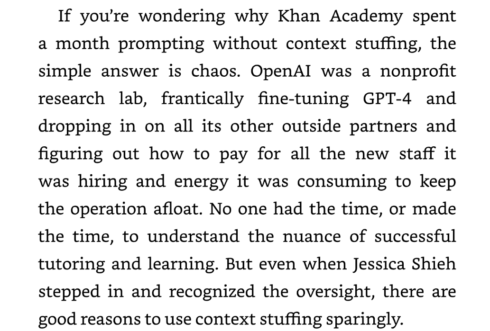
Tyrangiel, AI for Good: How Real People Are Using Artificial Intelligence to Fix Things That Matter (Simon & Schuster, 2026)
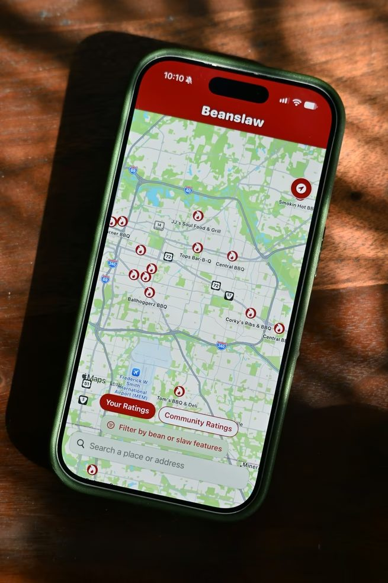
Excited, I showed a friend. “Where are everyone else’s slaw and bean ratings?” he asked, tapping at his phone. He didn’t get the point of an app that amounted to a personal journal. Almost two decades of smartphone apps had trained him to understand software as a mechanism for collective intelligence. A program that only a few people would use is now alien. App has come to refer to a type of global, leveraged software business, not a computer program.
Bogost, “The Tragedy of AI Coding,” The Atlantic, Oct. 12, 2026
I encountered a characteristic, if humdrum, example of software authority during what I thought would be a straightforward vibe-coding task last winter. I had long been dissatisfied with the countdown-timer app on the Apple Watch, with its giant list of times and tiny stop button. I mostly time things in 30-second increments: hamstring stretches, grill sears, tea brews. So with AI’s help, I made a watch app I called Taptimer. I’d tap the screen repeatedly to add half minutes; the timer would run, and then it would buzz. Tapping anywhere on the screen would turn it off again. Sounds simple, right?
Except, Apple doesn’t let third-party programs issue the type of repeated-vibration notifications that its special “native” timer program uses. I had to settle on a single-buzz notification. It works—I use Taptimer every day—but the terms of what the software is allowed to do are set by the owners of the platforms that people must use to run it.
Bogost, “The Tragedy of AI Coding,” The Atlantic, Oct. 12, 2026
The more I programmed with AI, the more I felt this tug-of-war between my own prior programming knowledge and the exciting, new coding capacities AI unlocked for me. On my own, I could have built the community ratings that my friend who tried Beanslaw had expected. But storing data in a scalable way across an internet service is complicated, and I wouldn’t have bothered for a program that was supposed to be for a handful of people. ChatGPT introduced me to an Apple programming feature called CloudKit, which made the process easy. Then AI made the implementation easy, too, by giving me the code.
Bogost, “The Tragedy of AI Coding,” The Atlantic, Oct. 12, 2026
This makes the aesthetics of vibe coding entirely familiar to programmers. The moment-to-moment experience of coding feels the same, but you do so at a greater remove. Realizing this made me understand why programmer types might find generative AI so immediately compelling, and also why they might not grasp the objections of people in other walks of life who oppose it. Using AI to create prose or illustrations seems to erase the experience of the writer or artist and their participation in the act of creation. It clobbers the process in favor of the outcome. But for a programmer, the outcome and the process improve all at once. Nothing about AI programming feels like a compromise or cheat. It just feels like programming.
Bogost, “The Tragedy of AI Coding,” The Atlantic, Oct. 12, 2026
Bogost, “The Tragedy of AI Coding,” The Atlantic, Oct. 12, 2026
When I pass by the thing on the way to the kitchen or the driveway, I feel a vibration of delight. The sensation isn’t quite pride, because I can hardly take sole credit for the accomplishment. But neither is it opportunism, as if I might package and resell weather-station displays as some kind of value-additive, hardware-accessory side hustle. Instead, I feel overcome by the modesty of the matter. A little black-and-white display is showing me the weather—one I made, if with AI help. How nice. For once, a computer doesn’t have to be connecting the world or saving it—or ruining it.
Bogost, “The Tragedy of AI Coding,” The Atlantic, Oct. 12, 2026
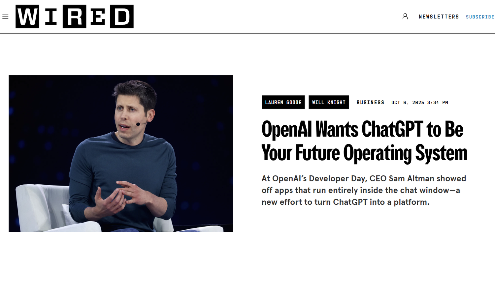
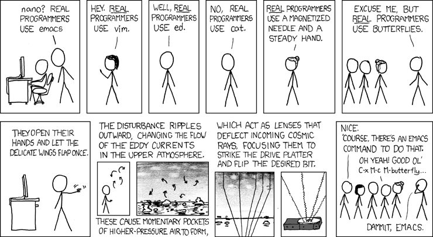
“I use the term agentic engineering to describe the practice of developing software with the assistance of coding agents.”
“…we need a term to describe unreviewed, prototype-quality LLM-generated code that distinguishes it from code that the author has brought up to a production ready standard.”
Willison, “What is agentic engineering?,” Agentic Engineering Patterns, §1.1
“Writing code has never been the sole activity of a software engineer. The craft has always been figuring out what code to write.”
Willison, “What is agentic engineering?,” Agentic Engineering Patterns, §1.1
“These best practices are still being figured out across our industry. I’m still figuring them out myself.”
“…any time our instinct says ‘don’t build that, it’s not worth the time’ fire off a prompt anyway…”
Willison, “Writing code is cheap now,” Agentic Engineering Patterns, §1.2
“The key idea here is that coding agents mean we only ever need to figure out a useful trick once.”
“Knowing that something is theoretically possible is not the same as having seen it done for yourself.”
Willison, “Hoard things you know how to do,” Agentic Engineering Patterns, §1.3
“Shipping worse code with agents is a choice. We can choose to ship code that is better instead.”
“The best way to make confident technology choices is to prove that they are fit for purpose with a prototype.”
Willison, “AI should help us produce better code,” Agentic Engineering Patterns, §1.4
“Believe it or not, that’s most of what it takes to build a coding agent!”
“A simple tool loop can be achieved with a few dozen lines of code on top of an existing LLM API.”
Willison, “How coding agents work,” Agentic Engineering Patterns, §2.1
Example (Claude): Dead Channel
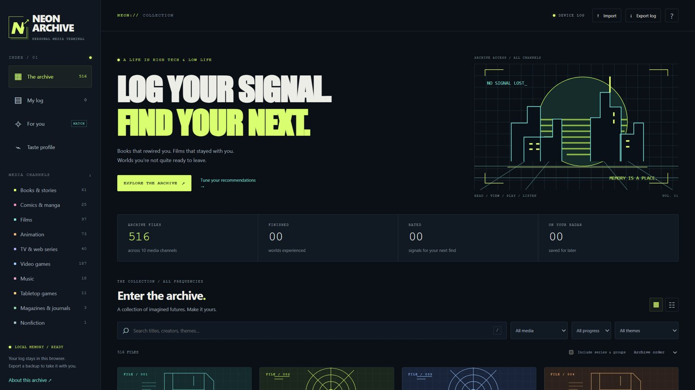
Example (ChatGPT): Neon Archive
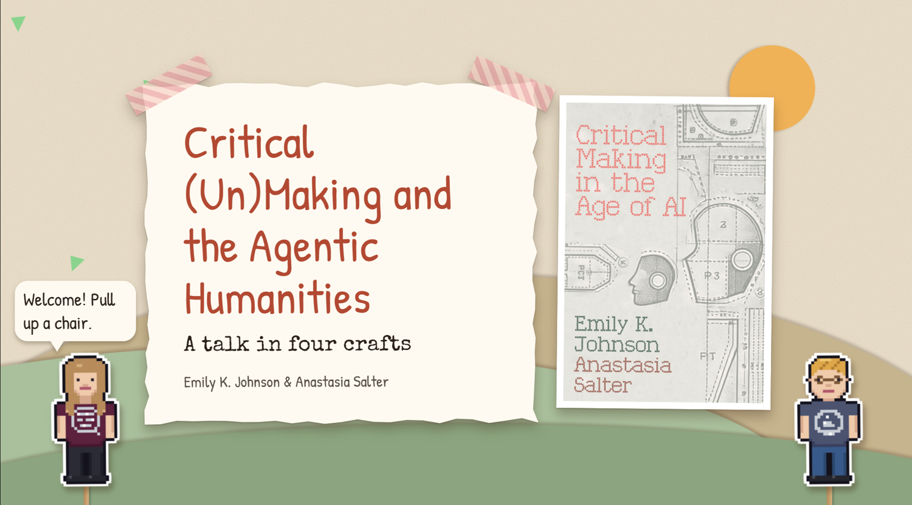
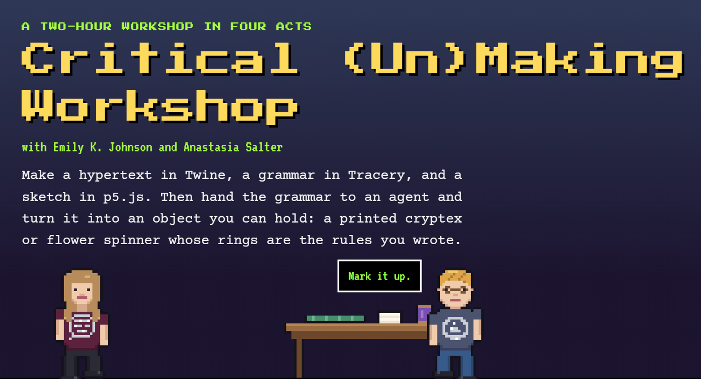
Johnson and Salter, talk and workshop at UVA